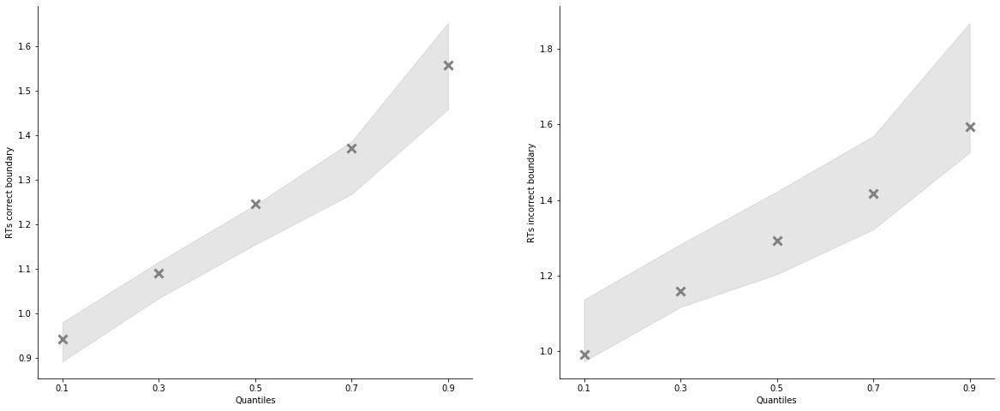
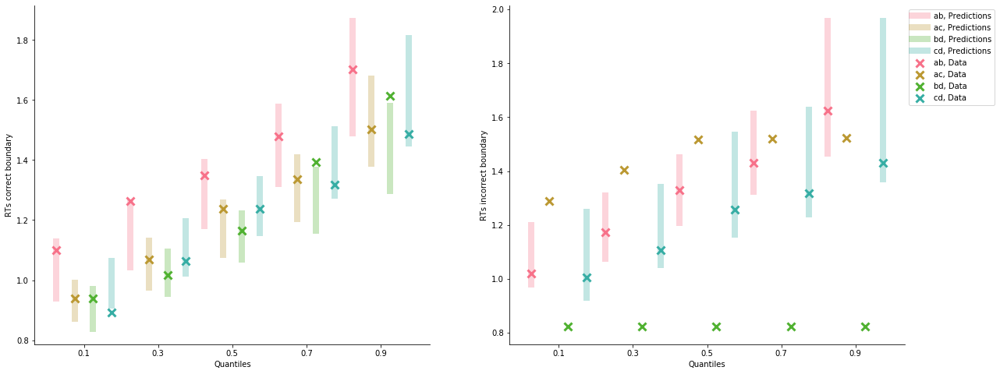

[1]:
import rlssm
import pandas as pd
import os
[2]:
par_path = os.path.abspath(os.path.join(os.getcwd(), os.pardir))
data_path = os.path.join(par_path, 'data/data_experiment.csv')
data = pd.read_csv(data_path, index_col=0)
data = data[data.participant == 12].reset_index(drop=True)
data['block_label'] += 1
# data = data[data['trial_block'] == 1]
data
INFO:numexpr.utils:NumExpr defaulting to 4 threads.
[2]:
| participant | block_label | trial_block | f_cor | f_inc | cor_option | inc_option | times_seen | rt | accuracy | |
|---|---|---|---|---|---|---|---|---|---|---|
| 0 | 12 | 1.0 | 1.0 | 48.0 | 40.0 | 4 | 2 | 1.0 | 0.822152 | 0.0 |
| 1 | 12 | 1.0 | 2.0 | 50.0 | 37.0 | 3 | 1 | 1.0 | 0.858400 | 1.0 |
| 2 | 12 | 1.0 | 3.0 | 62.0 | 41.0 | 4 | 2 | 2.0 | 1.014982 | 1.0 |
| 3 | 12 | 1.0 | 4.0 | 47.0 | 36.0 | 3 | 1 | 2.0 | 1.001788 | 1.0 |
| 4 | 12 | 1.0 | 5.0 | 54.0 | 39.0 | 4 | 2 | 3.0 | 0.985146 | 1.0 |
| ... | ... | ... | ... | ... | ... | ... | ... | ... | ... | ... |
| 233 | 12 | 3.0 | 76.0 | 55.0 | 40.0 | 4 | 2 | 38.5 | 0.914431 | 1.0 |
| 234 | 12 | 3.0 | 77.0 | 52.0 | 37.0 | 3 | 1 | 38.5 | 1.276829 | 1.0 |
| 235 | 12 | 3.0 | 78.0 | 49.0 | 48.0 | 4 | 3 | 40.0 | 1.299635 | 1.0 |
| 236 | 12 | 3.0 | 79.0 | 34.0 | 33.0 | 2 | 1 | 39.0 | 1.116690 | 1.0 |
| 237 | 12 | 3.0 | 80.0 | 44.0 | 37.0 | 2 | 1 | 40.0 | 1.117028 | 1.0 |
238 rows × 10 columns
[3]:
model = rlssm.RLALBAModel_2A(1,
separate_learning_rates=True)
INFO:pystan:COMPILING THE C++ CODE FOR MODEL anon_model_fe92bf29c319bff705ae4783020080d2 NOW.
[4]:
model.family, model.model_label, model.hierarchical_levels
[4]:
('RLALBA_2A', 'RLALBA_2A_2lr', 1)
[5]:
# sampling parameters
n_iter = 700
n_chains = 2
n_thin = 5
# learning parameters
K = 4 # n options
initial_value_learning = 17.5 # intitial value (Q0)
[6]:
model_fit = model.fit(data,
K,
initial_value_learning,
thin = n_thin,
iter = n_iter,
chains = n_chains)
WARNING:pystan:Maximum (flat) parameter count (1000) exceeded: skipping diagnostic tests for n_eff and Rhat.
To run all diagnostics call pystan.check_hmc_diagnostics(fit)
WARNING:pystan:90 of 140 iterations ended with a divergence (64.3 %).
WARNING:pystan:Try running with adapt_delta larger than 0.8 to remove the divergences.
Checks MCMC diagnostics:
n_eff / iter looks reasonable for all parameters
90.0 of 140 iterations ended with a divergence (64.28571428571429%)
Try running with larger adapt_delta to remove the divergences
0 of 140 iterations saturated the maximum tree depth of 10 (0.0%)
E-BFMI indicated no pathological behavior
[7]:
model_fit.rhat.describe()
[7]:
| rhat | |
|---|---|
| count | 8.000000 |
| mean | 1.024727 |
| std | 0.034916 |
| min | 0.988900 |
| 25% | 1.000562 |
| 50% | 1.015619 |
| 75% | 1.042043 |
| max | 1.076617 |
[8]:
model_fit.rhat.head()
[8]:
| rhat | variable | |
|---|---|---|
| 0 | 1.076617 | k |
| 1 | 1.030686 | A |
| 2 | 1.076115 | tau |
| 3 | 1.003993 | v0 |
| 4 | 1.008610 | ws |
[9]:
model_fit.waic
[9]:
{'lppd': -79.73251708248839,
'p_waic': 6.390367919407775,
'waic': 172.24577000379233,
'waic_se': 27.370939587444816}
[10]:
model_fit.samples
[10]:
| chain | draw | transf_k | transf_A | transf_tau | transf_v0 | transf_ws | transf_wd | transf_alpha_pos | transf_alpha_neg | |
|---|---|---|---|---|---|---|---|---|---|---|
| 0 | 0 | 32 | 1.957419 | 2.636890 | 0.477489 | 2.974397 | 0.002759 | 0.132638 | 0.944147 | 0.022153 |
| 1 | 0 | 46 | 1.743602 | 3.631926 | 0.531789 | 3.430104 | 0.001948 | 0.175134 | 0.949597 | 0.019433 |
| 2 | 0 | 68 | 2.604422 | 3.248735 | 0.391080 | 3.349916 | 0.004909 | 0.119000 | 0.880233 | 0.042571 |
| 3 | 0 | 66 | 1.525821 | 2.261192 | 0.538038 | 2.399238 | 0.004282 | 0.136476 | 0.822308 | 0.036581 |
| 4 | 0 | 37 | 4.119463 | 2.053900 | 0.165503 | 3.575491 | 0.001737 | 0.142488 | 0.986148 | 0.010062 |
| ... | ... | ... | ... | ... | ... | ... | ... | ... | ... | ... |
| 135 | 1 | 9 | 1.921550 | 2.649758 | 0.489802 | 3.198781 | 0.001032 | 0.131314 | 0.967494 | 0.022409 |
| 136 | 1 | 65 | 2.507558 | 3.630596 | 0.395082 | 3.565689 | 0.003422 | 0.134514 | 0.514543 | 0.053174 |
| 137 | 1 | 66 | 2.403542 | 3.752416 | 0.448188 | 3.316362 | 0.007574 | 0.131896 | 0.905497 | 0.106945 |
| 138 | 1 | 45 | 2.314840 | 2.870147 | 0.451377 | 3.613747 | 0.000276 | 0.149013 | 0.996261 | 0.013133 |
| 139 | 1 | 63 | 1.651546 | 2.806902 | 0.490088 | 2.766012 | 0.000861 | 0.127819 | 0.755305 | 0.038475 |
140 rows × 10 columns
[11]:
model_fit.trial_samples
[11]:
OrderedDict([('k_t',
array([[1.95741944, 1.95741944, 1.95741944, ..., 1.95741944, 1.95741944,
1.95741944],
[1.74360167, 1.74360167, 1.74360167, ..., 1.74360167, 1.74360167,
1.74360167],
[2.60442227, 2.60442227, 2.60442227, ..., 2.60442227, 2.60442227,
2.60442227],
...,
[2.40354203, 2.40354203, 2.40354203, ..., 2.40354203, 2.40354203,
2.40354203],
[2.31483979, 2.31483979, 2.31483979, ..., 2.31483979, 2.31483979,
2.31483979],
[1.65154627, 1.65154627, 1.65154627, ..., 1.65154627, 1.65154627,
1.65154627]])),
('A_t',
array([[2.63689012, 2.63689012, 2.63689012, ..., 2.63689012, 2.63689012,
2.63689012],
[3.6319259 , 3.6319259 , 3.6319259 , ..., 3.6319259 , 3.6319259 ,
3.6319259 ],
[3.24873453, 3.24873453, 3.24873453, ..., 3.24873453, 3.24873453,
3.24873453],
...,
[3.75241648, 3.75241648, 3.75241648, ..., 3.75241648, 3.75241648,
3.75241648],
[2.87014717, 2.87014717, 2.87014717, ..., 2.87014717, 2.87014717,
2.87014717],
[2.80690249, 2.80690249, 2.80690249, ..., 2.80690249, 2.80690249,
2.80690249]])),
('tau_t',
array([[0.47748872, 0.47748872, 0.47748872, ..., 0.47748872, 0.47748872,
0.47748872],
[0.53178927, 0.53178927, 0.53178927, ..., 0.53178927, 0.53178927,
0.53178927],
[0.39107967, 0.39107967, 0.39107967, ..., 0.39107967, 0.39107967,
0.39107967],
...,
[0.44818766, 0.44818766, 0.44818766, ..., 0.44818766, 0.44818766,
0.44818766],
[0.45137705, 0.45137705, 0.45137705, ..., 0.45137705, 0.45137705,
0.45137705],
[0.4900878 , 0.4900878 , 0.4900878 , ..., 0.4900878 , 0.4900878 ,
0.4900878 ]])),
('drift_cor_t',
array([[3.07097132, 3.07097132, 4.21088544, ..., 3.37067584, 3.56239374,
3.55640163],
[3.49828862, 3.49828862, 4.92678667, ..., 3.76803902, 3.97903405,
3.97430656],
[3.52174486, 3.52174486, 4.58876403, ..., 3.96217005, 4.33241071,
4.30965392],
...,
[3.58145383, 3.58145383, 4.90039078, ..., 4.31905263, 4.73708726,
4.65352396],
[3.62340845, 3.62340845, 4.82563152, ..., 3.85175349, 3.87749979,
3.8762358 ],
[2.7961452 , 2.7961452 , 3.60294726, ..., 2.9725351 , 3.4169867 ,
3.39907765]])),
('drift_inc_t',
array([[3.07097132, 3.07097132, 2.20720452, ..., 3.22914481, 2.87628035,
2.87961105],
[3.49828862, 3.49828862, 2.26588292, ..., 3.5533068 , 3.23298427,
3.23594799],
[3.52174486, 3.52174486, 2.91279435, ..., 3.86983624, 3.20809419,
3.22306845],
...,
[3.58145383, 3.58145383, 2.98949469, ..., 4.01540233, 3.14820143,
3.20635017],
[3.62340845, 3.62340845, 2.45033732, ..., 3.44208015, 3.40277826,
3.40383484],
[2.7961452 , 2.7961452 , 2.05827225, ..., 2.75728959, 2.26212227,
2.27881096]]))])
[12]:
model_fit.plot_posteriors(height=5, show_intervals='HDI');

[13]:
pp = model_fit.get_posterior_predictives_df(n_posterior_predictives=100)
pp
[13]:
| variable | rt | ... | accuracy | ||||||||||||||||||
|---|---|---|---|---|---|---|---|---|---|---|---|---|---|---|---|---|---|---|---|---|---|
| trial | 1 | 2 | 3 | 4 | 5 | 6 | 7 | 8 | 9 | 10 | ... | 229 | 230 | 231 | 232 | 233 | 234 | 235 | 236 | 237 | 238 |
| sample | |||||||||||||||||||||
| 1 | 1.564486 | 2.369776 | 0.925207 | 0.954795 | 1.094458 | 1.349369 | 0.948336 | 0.797176 | 1.566574 | 1.134852 | ... | 1.0 | 1.0 | 1.0 | 1.0 | 1.0 | 1.0 | 1.0 | 0.0 | 1.0 | 1.0 |
| 2 | 0.955055 | 1.792820 | 1.604913 | 1.001327 | 1.158058 | 1.191150 | 1.109026 | 1.974744 | 1.213003 | 1.010950 | ... | 1.0 | 1.0 | 0.0 | 1.0 | 1.0 | 1.0 | 1.0 | 1.0 | 1.0 | 0.0 |
| 3 | 1.526734 | 0.966404 | 1.376226 | 1.207403 | 0.942472 | 1.148683 | 1.276522 | 1.420843 | 1.063890 | 1.071847 | ... | 1.0 | 1.0 | 0.0 | 1.0 | 1.0 | 1.0 | 1.0 | 0.0 | 0.0 | 0.0 |
| 4 | 1.921047 | 1.838796 | 1.163548 | 1.008081 | 1.163362 | 1.036656 | 1.177512 | 1.233202 | 1.017178 | 0.977523 | ... | 1.0 | 1.0 | 0.0 | 1.0 | 1.0 | 0.0 | 1.0 | 0.0 | 0.0 | 1.0 |
| 5 | 1.608531 | 1.322204 | 1.248691 | 1.433672 | 0.946686 | 0.948169 | 0.707011 | 1.351316 | 1.273902 | 1.149294 | ... | 1.0 | 1.0 | 1.0 | 1.0 | 1.0 | 1.0 | 1.0 | 1.0 | 1.0 | 0.0 |
| ... | ... | ... | ... | ... | ... | ... | ... | ... | ... | ... | ... | ... | ... | ... | ... | ... | ... | ... | ... | ... | ... |
| 96 | 1.208710 | 1.280600 | 0.852022 | 0.962910 | 0.816796 | 0.894649 | 0.936582 | 1.207679 | 1.593329 | 0.957363 | ... | 1.0 | 1.0 | 1.0 | 1.0 | 1.0 | 1.0 | 1.0 | 0.0 | 0.0 | 0.0 |
| 97 | 1.540834 | 1.083140 | 1.067082 | 0.846405 | 1.001281 | 1.559486 | 0.979031 | 1.148207 | 1.371485 | 1.079006 | ... | 1.0 | 1.0 | 1.0 | 1.0 | 1.0 | 1.0 | 1.0 | 0.0 | 1.0 | 1.0 |
| 98 | 1.610352 | 1.352030 | 1.143512 | 1.361982 | 0.900919 | 1.003905 | 0.835896 | 1.069654 | 1.384923 | 0.857312 | ... | 1.0 | 1.0 | 0.0 | 1.0 | 1.0 | 1.0 | 1.0 | 1.0 | 1.0 | 0.0 |
| 99 | 1.388738 | 1.530968 | 1.445429 | 1.056191 | 0.992146 | 1.176960 | 1.046796 | 1.176246 | 1.233829 | 0.999821 | ... | 1.0 | 1.0 | 0.0 | 1.0 | 1.0 | 1.0 | 1.0 | 1.0 | 1.0 | 0.0 |
| 100 | 1.709029 | 1.330750 | 1.037359 | 1.389140 | 0.955823 | 1.236587 | 0.995753 | 1.192865 | 0.998368 | 0.841738 | ... | 1.0 | 1.0 | 1.0 | 1.0 | 1.0 | 1.0 | 1.0 | 0.0 | 1.0 | 0.0 |
100 rows × 476 columns
[14]:
pp_summary = model_fit.get_posterior_predictives_summary(n_posterior_predictives=100)
pp_summary
[14]:
| mean_accuracy | mean_rt | skewness | quant_10_rt_incorrect | quant_30_rt_incorrect | quant_50_rt_incorrect | quant_70_rt_incorrect | quant_90_rt_incorrect | quant_10_rt_correct | quant_30_rt_correct | quant_50_rt_correct | quant_70_rt_correct | quant_90_rt_correct | |
|---|---|---|---|---|---|---|---|---|---|---|---|---|---|
| sample | |||||||||||||
| 1 | 0.810924 | 1.225491 | 1.466130 | 1.077670 | 1.203141 | 1.335318 | 1.450478 | 1.761342 | 0.915241 | 1.026633 | 1.162860 | 1.288013 | 1.515564 |
| 2 | 0.806723 | 1.226806 | 1.057720 | 1.002169 | 1.120100 | 1.250818 | 1.406994 | 1.609845 | 0.905077 | 1.052474 | 1.188170 | 1.324759 | 1.535147 |
| 3 | 0.752101 | 1.239684 | 1.360633 | 1.020402 | 1.147525 | 1.335068 | 1.447020 | 1.661644 | 0.896613 | 1.069444 | 1.197588 | 1.307510 | 1.513534 |
| 4 | 0.831933 | 1.200705 | 1.791344 | 1.018880 | 1.126423 | 1.222316 | 1.346750 | 1.664615 | 0.935610 | 1.057948 | 1.149380 | 1.246569 | 1.462571 |
| 5 | 0.764706 | 1.281923 | 0.976658 | 1.076121 | 1.246768 | 1.381382 | 1.510202 | 1.707341 | 0.931895 | 1.110511 | 1.220826 | 1.331303 | 1.547216 |
| ... | ... | ... | ... | ... | ... | ... | ... | ... | ... | ... | ... | ... | ... |
| 96 | 0.798319 | 1.259994 | 1.376311 | 1.053627 | 1.294004 | 1.360489 | 1.456208 | 1.679311 | 0.919387 | 1.019386 | 1.168447 | 1.324182 | 1.640726 |
| 97 | 0.823529 | 1.242512 | 0.360002 | 1.041247 | 1.235458 | 1.395184 | 1.508879 | 1.654228 | 0.910938 | 1.057521 | 1.187897 | 1.326471 | 1.559809 |
| 98 | 0.777311 | 1.285651 | 1.332311 | 1.074578 | 1.197276 | 1.309586 | 1.436337 | 1.750828 | 0.957116 | 1.109550 | 1.204632 | 1.340291 | 1.642145 |
| 99 | 0.798319 | 1.256174 | 0.933481 | 1.118915 | 1.234807 | 1.304108 | 1.399039 | 1.607942 | 0.944618 | 1.074638 | 1.202732 | 1.302927 | 1.579037 |
| 100 | 0.798319 | 1.254384 | 0.806888 | 1.160724 | 1.230927 | 1.369052 | 1.462614 | 1.722643 | 0.917181 | 1.056561 | 1.160499 | 1.333779 | 1.576467 |
100 rows × 13 columns
[15]:
g = model_fit.plot_mean_posterior_predictives(n_posterior_predictives=100, figsize=(20,8), show_intervals='HDI')

[16]:
model_fit.plot_quantiles_posterior_predictives(n_posterior_predictives=100, kind='shades');

Grouped¶
[17]:
import numpy as np
[18]:
data['choice_pair'] = 'AB'
data.loc[(data.cor_option == 3) & (data.inc_option == 1), 'choice_pair'] = 'AC'
data.loc[(data.cor_option == 4) & (data.inc_option == 2), 'choice_pair'] = 'BD'
data.loc[(data.cor_option == 4) & (data.inc_option == 3), 'choice_pair'] = 'CD'
data['block_bins'] = pd.cut(data.trial_block, 8, labels=np.arange(1, 9))
[19]:
data.head()
[19]:
| index | participant | block_label | trial_block | f_cor | f_inc | cor_option | inc_option | times_seen | rt | accuracy | accuracy_rescale | choice_pair | block_bins | |
|---|---|---|---|---|---|---|---|---|---|---|---|---|---|---|
| 0 | 0 | 12 | 1.0 | 1.0 | 48.0 | 40.0 | 4 | 2 | 1.0 | 0.822152 | 0.0 | 2 | BD | 1 |
| 1 | 1 | 12 | 1.0 | 2.0 | 50.0 | 37.0 | 3 | 1 | 1.0 | 0.858400 | 1.0 | 1 | AC | 1 |
| 2 | 2 | 12 | 1.0 | 3.0 | 62.0 | 41.0 | 4 | 2 | 2.0 | 1.014982 | 1.0 | 1 | BD | 1 |
| 3 | 3 | 12 | 1.0 | 4.0 | 47.0 | 36.0 | 3 | 1 | 2.0 | 1.001788 | 1.0 | 1 | AC | 1 |
| 4 | 4 | 12 | 1.0 | 5.0 | 54.0 | 39.0 | 4 | 2 | 3.0 | 0.985146 | 1.0 | 1 | BD | 1 |
[20]:
model_fit.get_grouped_posterior_predictives_summary(
grouping_vars=['block_label', 'choice_pair'],
quantiles=[.3, .5, .7],
n_posterior_predictives=100)
[20]:
| mean_accuracy | mean_rt | skewness | quant_30_rt_incorrect | quant_30_rt_correct | quant_50_rt_incorrect | quant_50_rt_correct | quant_70_rt_incorrect | quant_70_rt_correct | |||
|---|---|---|---|---|---|---|---|---|---|---|---|
| block_label | choice_pair | sample | |||||||||
| 1.0 | AB | 1 | 0.789474 | 1.347321 | 1.122194 | 1.282267 | 1.086746 | 1.442645 | 1.282238 | 1.663757 | 1.491624 |
| 2 | 0.631579 | 1.377457 | 0.611352 | 1.325389 | 1.104057 | 1.452266 | 1.218145 | 1.680508 | 1.358047 | ||
| 3 | 0.842105 | 1.272940 | 0.497397 | 1.155064 | 1.152378 | 1.170068 | 1.263115 | 1.251384 | 1.386489 | ||
| 4 | 0.684211 | 1.292221 | 0.519866 | 1.164142 | 1.179432 | 1.281185 | 1.259010 | 1.296797 | 1.404754 | ||
| 5 | 0.789474 | 1.393557 | 0.850553 | 1.758830 | 1.215383 | 1.845499 | 1.250447 | 1.874114 | 1.361366 | ||
| ... | ... | ... | ... | ... | ... | ... | ... | ... | ... | ... | ... |
| 3.0 | CD | 96 | 0.800000 | 1.200675 | 1.254522 | 1.157545 | 1.051837 | 1.246048 | 1.134684 | 1.353537 | 1.247734 |
| 97 | 0.750000 | 1.363255 | 0.991652 | 1.370828 | 1.158315 | 1.376107 | 1.229522 | 1.545988 | 1.374486 | ||
| 98 | 0.700000 | 1.256463 | 0.570498 | 0.976906 | 1.080740 | 1.155290 | 1.170421 | 1.485986 | 1.361908 | ||
| 99 | 0.600000 | 1.332878 | -0.018974 | 1.421025 | 1.068439 | 1.573222 | 1.224862 | 1.619933 | 1.252221 | ||
| 100 | 0.650000 | 1.299432 | 2.082164 | 1.245284 | 1.064391 | 1.335698 | 1.143667 | 1.517258 | 1.252012 |
1200 rows × 9 columns
[21]:
model_fit.get_grouped_posterior_predictives_summary(
grouping_vars=['block_bins'],
quantiles=[.3, .5, .7],
n_posterior_predictives=100)
[21]:
| mean_accuracy | mean_rt | skewness | quant_30_rt_incorrect | quant_30_rt_correct | quant_50_rt_incorrect | quant_50_rt_correct | quant_70_rt_incorrect | quant_70_rt_correct | ||
|---|---|---|---|---|---|---|---|---|---|---|
| block_bins | sample | |||||||||
| 1 | 1 | 0.566667 | 1.184102 | -0.049816 | 1.115868 | 1.079342 | 1.218774 | 1.211936 | 1.251260 | 1.338582 |
| 2 | 0.666667 | 1.295043 | 0.947217 | 1.214966 | 1.125108 | 1.335698 | 1.199724 | 1.561727 | 1.353868 | |
| 3 | 0.800000 | 1.235128 | 1.255731 | 1.215346 | 0.967203 | 1.274058 | 1.128954 | 1.460409 | 1.285365 | |
| 4 | 0.666667 | 1.567288 | 5.278937 | 1.275022 | 1.060746 | 1.398928 | 1.150200 | 1.583840 | 1.292751 | |
| 5 | 0.600000 | 1.435806 | 1.056671 | 1.289426 | 1.341388 | 1.336770 | 1.428924 | 1.402619 | 1.540577 | |
| ... | ... | ... | ... | ... | ... | ... | ... | ... | ... | ... |
| 8 | 96 | 0.750000 | 1.166782 | 0.183029 | 0.992509 | 0.986704 | 1.074315 | 1.203204 | 1.248064 | 1.299267 |
| 97 | 0.821429 | 1.113402 | 0.636994 | 1.086393 | 0.951510 | 1.116386 | 1.047252 | 1.160586 | 1.214341 | |
| 98 | 0.821429 | 1.257767 | 0.238247 | 1.218961 | 1.008941 | 1.530063 | 1.245278 | 1.532051 | 1.384054 | |
| 99 | 0.857143 | 1.229513 | 0.821214 | 1.493103 | 0.997743 | 1.548044 | 1.129008 | 1.589211 | 1.212857 | |
| 100 | 0.821429 | 1.208913 | 0.942044 | 1.571404 | 0.904333 | 1.674527 | 1.037170 | 1.840402 | 1.212175 |
800 rows × 9 columns
[22]:
data.head()
[22]:
| index | participant | block_label | trial_block | f_cor | f_inc | cor_option | inc_option | times_seen | rt | accuracy | accuracy_rescale | choice_pair | block_bins | |
|---|---|---|---|---|---|---|---|---|---|---|---|---|---|---|
| 0 | 0 | 12 | 1.0 | 1.0 | 48.0 | 40.0 | 4 | 2 | 1.0 | 0.822152 | 0.0 | 2 | BD | 1 |
| 1 | 1 | 12 | 1.0 | 2.0 | 50.0 | 37.0 | 3 | 1 | 1.0 | 0.858400 | 1.0 | 1 | AC | 1 |
| 2 | 2 | 12 | 1.0 | 3.0 | 62.0 | 41.0 | 4 | 2 | 2.0 | 1.014982 | 1.0 | 1 | BD | 1 |
| 3 | 3 | 12 | 1.0 | 4.0 | 47.0 | 36.0 | 3 | 1 | 2.0 | 1.001788 | 1.0 | 1 | AC | 1 |
| 4 | 4 | 12 | 1.0 | 5.0 | 54.0 | 39.0 | 4 | 2 | 3.0 | 0.985146 | 1.0 | 1 | BD | 1 |
[23]:
model_fit.plot_mean_grouped_posterior_predictives(grouping_vars=['block_bins', 'choice_pair'],
n_posterior_predictives=100,
figsize=(20,8));

[24]:
model_fit.plot_quantiles_grouped_posterior_predictives(
n_posterior_predictives=100,
grouping_var='choice_pair',
kind='shades',
quantiles=[.1, .3, .5, .7, .9]);

[25]:
import seaborn as sns
[26]:
model_fit.plot_quantiles_grouped_posterior_predictives(
n_posterior_predictives=300,
grouping_var='choice_pair',
palette = sns.color_palette('husl'),
intervals_kws={'alpha': .3, 'lw':8},
hue_order=['AB', 'AC', 'BD', 'CD'],
hue_labels=['ab', 'ac', 'bd', 'cd']);
/Users/Khamir/DecisionMaking/_Reports/_7/rlssm/rlssm/fits_race.py:242: UserWarning: Cannot have more posterior predictive samples than posterior samples. Will continue with n_posterior_predictives=140
pp_rt, pp_acc = self.get_posterior_predictives(n_posterior_predictives, **kwargs)

[27]:
model_fit.plot_mean_grouped_posterior_predictives(
grouping_vars=['block_bins'],
n_posterior_predictives=100,
figsize=(20,8));

[ ]: